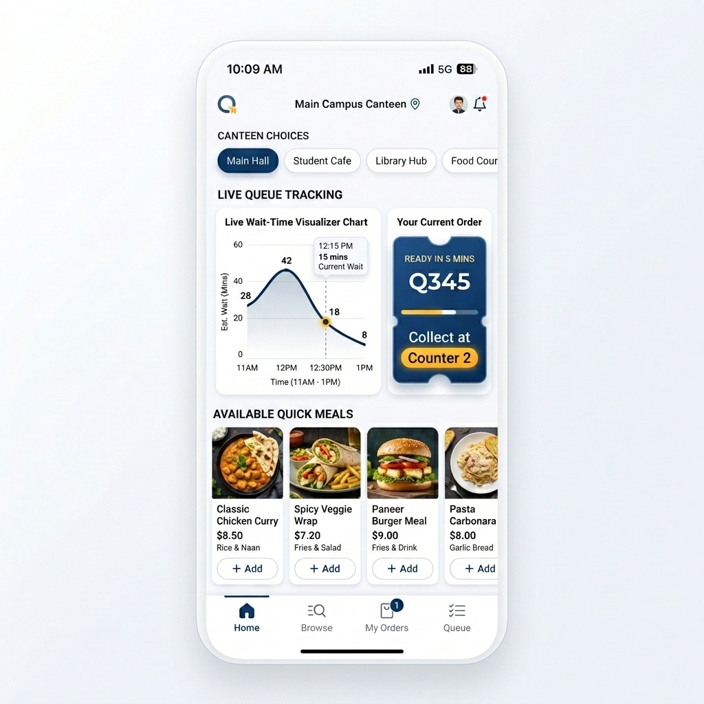

Say goodbye to long canteen lines and rushed lunch breaks. QueueLess tracks live cafeteria queues and lets you pre-order meals from your phone. Grab food directly from the express lane!

15,000+
Daily hungry students at Christ
30 Minutes
Standard break length per student
85% Reduced
Average queue waiting time
How QueueLess Saves Your Time
In just three intuitive steps, coordinate your meal order around your lectures and walk past the crowds.
Open the web app from your seat in the classroom. Check live crowd stats, estimated wait times, and queue lengths for all canteens on campus.
Select your dishes, customize ingredients, and securely checkout via UPI or campus card. Receive your digital receipt and unique pickup ticket.
Head to the canteen when notified. Walk straight to the dedicated QueueLess express counter, scan your ticket barcode, and take your fresh food.
Students and professors can view live wait estimates before heading out. The dashboard monitors orders in the queue and updates wait times using active sensor check-ins and order processing feeds.
Dynamic Wait Calculations: Updated instantly when kitchen orders are completed.
Crowd Levels: Helps distribute campus dining across lower-traffic canteens.
Before & After QueueLess
Why students and administration are switching to centralized live queue tracking.
Simulate a Pre-Order
Test the user journey of QueueLess right now! Pick a food item and watch the state machine track preparation in the kitchen.
Pick one of these popular Christ canteen items to test the pre-order flow:
Your order will be processed and sent directly to the Central Campus Kitchen.
Tailored for Christ University
Solving the unique scheduling and congestion challenges for the entire academic community.
Maximize your break times. Order snacks between classes, pay instantly via UPI, and skip standing in long lines. Never miss your favorite cafeteria meal.
Schedule your meals around lectures and campus meetings. Keep tabs on wait times at Ivy Hall to plan your break and grab tea or lunch without delaying your next session.
Reduce checkout gridlocks and cash handling. Streamline incoming orders digitally, monitor ingredient quantities, and improve overall order output speed.
Common Questions
Everything you need to know about setting up and using the QueueLess web system.